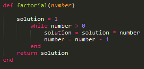
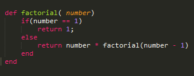

Week 8 Phase 0
Recursion
11/30/2014
Back in week 3 there was a challenge we had to do where we had to write a Ruby method that returns the factorial of a given integer. Back then, I came up with a simple solution shown below:
In this solution we use iteration to get to the right answer. But, there another way to get to the solution which is shown below:
This an example of recursion. Recursion is the process of repeating an item or for our case a method on itself. The way recursion work in this example is that factorial will keep multiplying by number -1 until it can find a solution that it already knows. For these example number * factorial(number -1) will keep going until number -1 equals 1. Since it knows that factorial of 1. Once it gets to case that it knows it will pass it up the return value to the previous factorial call and solve for that and keep doing that until it reaches the top. Once at the top it will have the right solution.